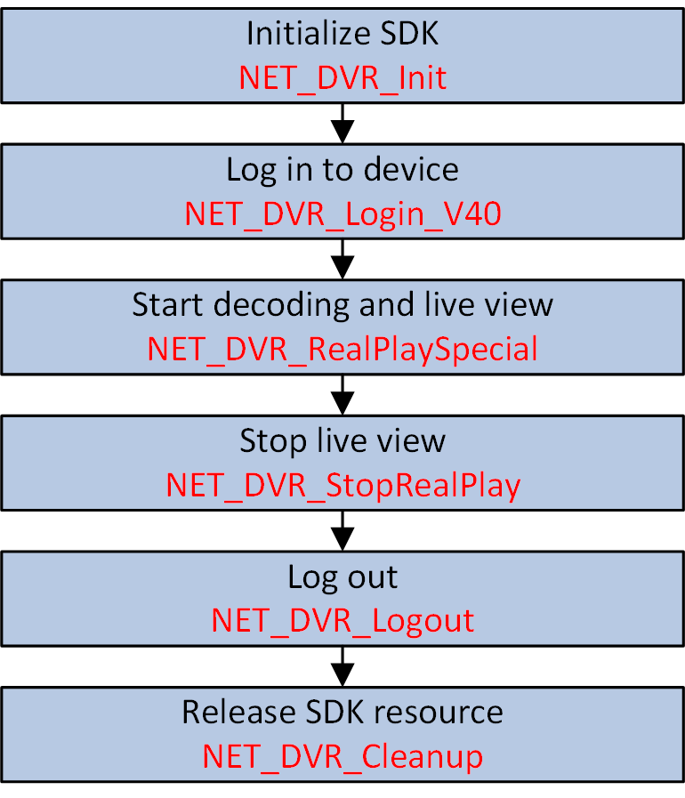

For some specific devices, e.g., face recognition server, you can remotely get the live stream via the URL returned by device for live view by calling HCNetSDK API based on ISAPI protocol communication.
Make sure you have called NET_DVR_Init to initialize the programming environment.
Make sure you have called NET_DVR_Login_V40 to log in to the device.

Figure 1 Programming Flow of Starting Live View Based on ISAPI ProtocolCall NET_DVR_Logout and NET_DVR_Cleanup to log out and release resources.